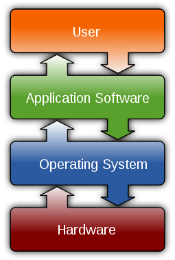

Computer software, or simply software, is a collection of data or computer instructions that tell the computer how to work.
Software refers to parts of the computer which do not have a material form, such as programs, data, protocols, etc.
Computer software includes computer programs, libraries and related non-executable data, such as online documentation or digital media.
Computer hardware and software require each other and neither can be realistically used on its own.

A diagram showing how the user interacts with application software on a typical desktop computer. The
application software layer interfaces with the operating system, which in turn communicates with the
hardware. The arrows indicate information flow.
| Types | Uses | |
|---|---|---|
| Operating system/System Software | Unix and BSD (Berkeley Software Distribution) | UNIX System V, IBM AIX, HP-UX,Solaris (SunOS), IRIX, List of BSD operating systems |
| GNU/Linux | List of Linux distributions, Comparison of Linux distributions | |
| Microsoft Windows | Windows 95,Windows 98, Windows NT, Windows 2000, Windows ME, Windows XP, Windows Vista, Windows 7, Windows 8, Windows 8.1, Windows 10 | |
| DOS | 86-DOS (QDOS), IBM PC DOS, MS-DOS, DR-DOS, FreeDOS | |
| Macintosh operating systems | Classic Mac OS, macOS (previously OS X and Mac OS X) | |
| Embedded and real-time | List of embedded operating systems | |
| Experimental | Amoeba, Oberon/Bluebottle, Plan 9 from Bell Labs | |
| Library | Multimedia | DirectX, OpenGL, OpenAL, Vulkan (API) |
| Programming library | C standard library, Standard Template Library | |
| Data | Protocol | TCP/IP, Kermit, FTP, HTTP, SMTP |
| File format | HTML, XML, JPEG, MPEG, PNG | |
| User interface | Graphical user interface (WIMP) | Microsoft Windows, GNOME, KDE, QNX Photon, CDE, GEM, Aqua |
| Text-based user interface | Command-line interface, Text user interface | |
| Application Software | Office suite | Word processing, Desktop publishing, Presentation program, Database management system, Scheduling & Time management, Spreadsheet, Accounting software |
| Internet Access | Browser, Email client, Web server, Mail transfer agent, Instant messaging | |
| Design and manufacturing | Computer-aided design, Computer-aided manufacturing, Plant management, Robotic manufacturing, Supply chain management | |
| Graphics | Raster graphics editor, Vector graphics editor, 3D modeler, Animation editor, 3D computer graphics, Video editing, Image processing | |
| Audio | Digital audio editor, Audio playback, Mixing, Audio synthesis, Computer music | |
| Software engineering | Compiler, Assembler, Interpreter, Debugger, Text editor, Integrated development environment, Software performance analysis, Revision control, Software configuration management | |
| Educational | Edutainment, Educational game, Serious game, Flight simulator | |
| Games | Strategy, Arcade, Puzzle, Simulation, First-person shooter, Platform, Massively multiplayer, Interactive fiction | |
| Misc | Artificial intelligence, Antivirus software, Malware scanner, Installer/Package management systems, File manager |